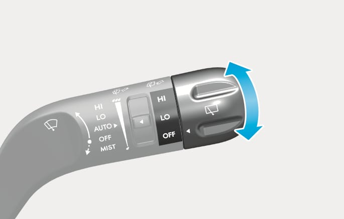
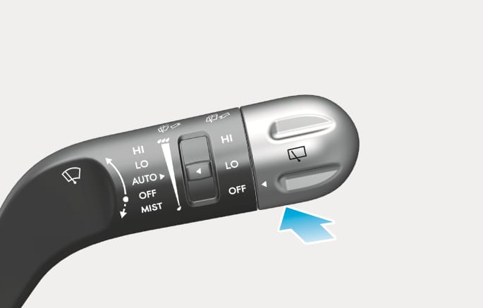

뒷유리 와이퍼 작동하기

2C_WiperRearSwitch
스위치 위치에 따른 뒷유리 와이퍼 작동 방식은 다음과 같습니다
-
HI: 빠른 속도로 작동
-
LO: 보통 속도로 작동
-
OFF: 와이퍼 끄기
후진 시 뒷유리 와이퍼 사용 설정하기
인포테인먼트 시스템에서 설정 > 차량 > 편의 > 후진 시 뒷유리 와이퍼 작동을 선택하십시오.
-
뒷유리 와이퍼가 꺼져 있고(OFF), 앞유리 와이퍼만 작동 중 'R'(후진)로 변속하면, 운전자의 후방 시야 확보를 돕기 위해 뒷유리 와이퍼가 자동으로 작동합니다.
-
다시 'D'(주행)로 변속하면 뒷유리 와이퍼 작동이 멈춥니다.
와셔액 뿌리기

2C_WasherRearSwitch
뒷유리에 와셔액을 뿌리려면 와이퍼 스위치를 클러스터 방향으로 미십시오.
-
와이퍼가 작동하며 유리에 와셔액이 분사됩니다.
-
스위치를 민 채 유지하면 와이퍼 작동과 와셔액 분사가 반복됩니다.
-
스위치를 놓으면 와이퍼가 원래 위치로 돌아옵니다.